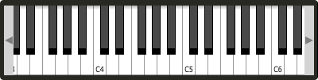

Keyboard
Keyboard will display a keyboard that will send MIDI information to your Csound instrument. This component can be used together with a hardware controller. Pressing keys on the actual MIDI keyboard will cause the on-screen keys to react up.
keyboard bounds(x, y, width, height), value(note), identchannel("channel"), visible(val), \
middlec(val), keywidth(val), scrollbars(val)
Identifiers
Specific Identifiers
keywidth(val) Set the width of the keys in pixels.
middlec(val) Sets the octave number that will appear on the middle C key. By default this is set to 3.
scrollbars(val) Enables or disables scrolling up and down through octaves. Enabled by defaut.
value(note) sets the note on the leftmost side of the keyboard when it appears on-screen. Middle C, 60, is the default.
Common Identifiers
bounds(x, y, width, height) integer values that set position and size on screen(in pixels).
identchannel("channel") Sets the channel which data is sent and retrieved from Csound. When used with a chnset opcode users can override widget attributes. See Identifier channels
visible(val) A value of 0 will cause the widget to become invisible. Widgets have their visibility set to 1 by default.
The keyboard can be played at different velocities depending on where you click on the key with your mouse. Clicking at the top of the key will cause a quieter velocity while clicking on the bottom will cause the note to sound with full velocity. If you wish to play the keyboard like a nutjob in standalone mode, make sure to pass '-m0d' to the CsOptions(disable console messages). The keyboard widget is only provided as a quick and easy means of testing plugins in Cabbage. Treating it as anything more than that could result in severe disappointment!
Example
<Cabbage>
form size(400, 300), caption("Untitled"), pluginID("plu1")
keyboard bounds(10, 10, 300, 150)
</Cabbage>
